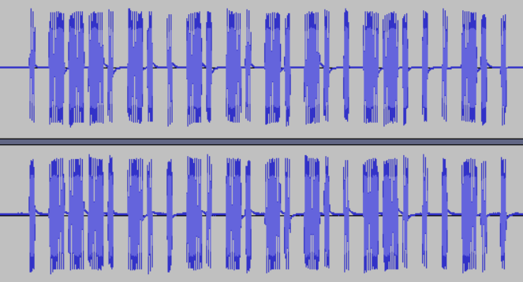

073 打开电动车
题目：截获了一台电动车的钥匙发射出的锁车信号，3分钟之内，我要获得它地址位的全部信息。flag内容二进制表示即可。
下载得到sctf.wav，audacity打开：

记录信号得到：
0 011101001010101001100010
PT2242信号：前面4bit表示同步码，中间的20bit表示地址码，后面的4bit表示功能码，最后一位是停止码。

从而地址码部分是01110100101010100110。
flag：sctf{01110100101010100110}
074 latlong
下载得到无后缀名文件，file命令判断是wav音频文件。重命名后audacity打开，波形和频谱均无可疑线索。选择“分析-频谱分析”：

可以看到在1100Hz和2200Hz处各有一个峰，猜测是某种无线电通信中利用数字频率调制来传输数据的信号。
同时找到原题的提示：Ax25 will lead you in the direction。
AX.25是国际业余无线电爱好者联盟为分组无线网制定的专门通信协议，可以用multimon-ng工具来解调信号。同时，为了直接解析wav格式的文件，需要安装另一个工具sox。在Kali中均可以直接通过apt-get install命令安装。
安装完成后开始解调信号：
root@kali:~/Desktop# multimon-ng -t wav -a AFSK1200 file.wav
multimon-ng 1.1.9
(C) 1996/1997 by Tom Sailer HB9JNX/AE4WA
(C) 2012-2020 by Elias Oenal
Available demodulators: POCSAG512 POCSAG1200 POCSAG2400 FLEX EAS UFSK1200 CLIPFSK FMSFSK AFSK1200 AFSK2400 AFSK2400_2 AFSK2400_3 HAPN4800 FSK9600 DTMF ZVEI1 ZVEI2 ZVEI3 DZVEI PZVEI EEA EIA CCIR MORSE_CW DUMPCSV X10 SCOPE
Enabled demodulators: AFSK1200
AFSK1200: fm WDPX01-0 to APRS-0 UI pid=F0
!/;E'q/Sz'O /A=000000flag{f4ils4f3c0mms}
flag：flag{f4ils4f3c0mms}
075 test.pyc
下载得到pyc文件，总之先反编译。uncompyle6一直报错。
C:\Users\Administrator\Desktop>uncompyle6 -o 1.py test.pyc
# file test.pyc
# --- This code section failed: ---
L. 1 0 LOAD_CONST '=cWbihGfyMzNllzZ'
3 NOP
4 NOP
5 NOP
6 LOAD_CONST '0cjZzMW'
9 LOAD_CONST 'N5cTM4Y'
12 LOAD_CONST 'jYygTOy'
15 LOAD_CONST 'cmNycWNyYmM1Ujf'
18 BINARY_ADD
19 STORE_NAME 0 'str'
L. 2 22 LOAD_CONST -1
25 LOAD_CONST None
28 IMPORT_NAME 1 'base64'
31 STORE_NAME 1 'base64'
L. 5 34 LOAD_CODE <code_object flag1>
37 MAKE_FUNCTION_0 0 None
40 STORE_NAME 2 'flag1'
L. 13 43 LOAD_CODE <code_object flag2>
46 MAKE_FUNCTION_0 0 None
49 STORE_NAME 3 'flag2'
L. 21 52 LOAD_CODE <code_object flag3>
55 MAKE_FUNCTION_0 0 None
58 STORE_NAME 4 'flag3'
L. 30 61 LOAD_NAME 2 'flag1'
64 CALL_FUNCTION_0 0 None
67 POP_TOP
Parse error at or near `None' instruction at offset -1
test.pyc --
# decompile failed
可以看到有一些固定的字符串：
'=cWbihGfyMzNllzZ' '0cjZzMW' 'N5cTM4Y' 'jYygTOy' 'cmNycWNyYmM1Ujf'
猜测是个反过来的base64密文，倒一下：
fjU1MmYyNWcyNmcyOTgyYjY4MTc5NWMzZjc0ZzllNzMyfGhibWc=
解密：
~552f25g26g2982b681795c3f74g9e732|hbmg
hbmg往前移一位就是galf，猜测要倒过来再凯撒移位。再根据|和~的ASCII码与{}也正好差1，因此是广义的ASCII凯撒移位：
a = '~552f25g26g2982b681795c3f74g9e732|hbmg'
a = a[::-1]
for i in a:
print(chr(ord(i) - 1), end = '')
flag：flag{126d8f36e2b486075a1781f51f41e144}
076 Avatar
下载得到jpg文件。能用的隐写工具全试了一遍最后发现是outguess。
root@kali:~/Desktop# outguess -r 035bfaa85410429495786d8ea6ecd296.jpg -t flag.txt
Reading 035bfaa85410429495786d8ea6ecd296.jpg....
Extracting usable bits: 28734 bits
Steg retrieve: seed: 94, len: 41
root@kali:~/Desktop# cat flag.txt
We should blow up the bridge at midnight
flag：We should blow up the bridge at midnight
077 Hidden-Message
下载得到pcap文件，wireshark打开。

全都是UDP流，追踪流也没有有效信息。继续观察其他内容。
注意到数据包的总数是80，再看到这一列的端口号其实一直在变。

将这一列的1和0记录下来，发现每8位开头都是1。将1和0互换，并每8位一组二进制ASCII转码，得到flag。
也可以用tshark输出UDP协议端口号后，配合管道符和Linux命令行得到每个端口号的最后一位：
root@kali:~/Desktop# tshark -r 8868f595665740159650d6e654aadc93.pcap -Tfields -e udp.srcport | while read port; do echo -n ${port: -1}; done
Running as user "root" and group "root". This could be dangerous.
10110111100110101001011010001100100110101001000110011101100110101000110110011000
之后同样互换0和1并二进制ASCII转码即可。
flag：Heisenberg
078 red_green
下载得到png图片。

全部由红绿色点组成，容易想到两种颜色分别表示0和1。先写个python脚本提取信息：
from PIL import Image
img = Image.open('C:/Users/Administrator/Desktop/1.png')
h = 780
w = 1024
j = 0
res = ''
for i in range(w * h):
x = i % w # 横坐标
y = i // w # 纵坐标
color = img.getpixel((x, y))
if color == (255, 0, 0): # 红色
res += '1'
elif color == (0, 255, 0): # 绿色
res += '0'
j += 1
if j == 8: # 每8位转一次十六进制
h = hex(int(res, 2))
if len(h) == 3:
print('0' + h[2:], end = '')
elif len(h) == 4:
print(h[2:], end = '')
j = 0
res = ''
红0绿1的运行结果，开头为0027001f；红1绿0的运行结果，开头为ffd8ffe0，是jpeg文件头。显然选后者。将运行结果在十六进制编辑器保存为jpg格式文件得到：
此外本题还有较为取巧的方法，Stegsolve打开原png图片后用Data Extract功能，选择Red的0位：

同样可以直接得到jpg文件。
flag：flag{134699ac9d6ac98b}